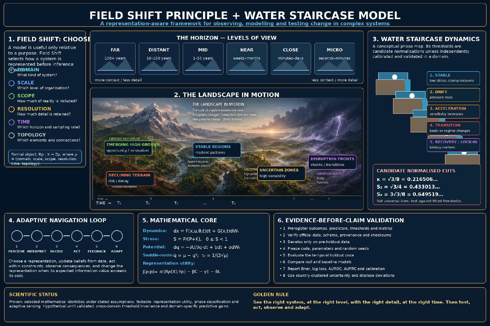

Research overview
The FieldShift Principle and Water Staircase
How do we choose the right representation to understand a changing system? FieldShift describes the choice of observational perspective. Water Staircase describes how the system’s dynamics may evolve.
Thomas Hedlund Leijon

How the two parts fit together
Representation
FieldShift selects the domain, scale, scope, resolution, time horizon and topology that suit the task.
System dynamics
Water Staircase explores stability, drift, acceleration, critical transitions, collapse and recovery. The model uses potential landscapes and basins of attraction to describe possible paths.
Feedback
The navigation loop connects observation, interpretation, decisions, action and feedback. New observations can update both the estimated phase and the choice of representation.
Scientific status
The manuscript distinguishes symbolically checked identities, mathematical results under stated assumptions, synthetic simulations and empirical hypotheses awaiting testing. Geometric thresholds are treated as candidate model parameters. The V-Dem protocol in the manuscript is a draft.
Research posters
Open a poster to read the details at full size.